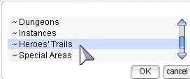
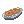
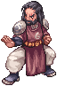

Sara's Memory
| This quest or instance is repeatable. | ||
|---|---|---|
| Cooldown | Tickets Available | |
|
Resets at 0:00 |
Solo: 0 | Party: 0 |
Overview
| Requirements | |
|---|---|
| Base Level: | 99 |
| Starting Point: | dali 130/105 |
| Items: | - |
| Rewards | |
| Experience: | 770,000 BEXP, 1,000,000 JEXP. |
| Items: | Various Stat Foods |
| Others: | - |
Sara's Memory is one of the Instances which was introduced in the Heroes' Trails patch. It tell the origins of the character Sara Irene, one of the 12 Valkyries from the original Ragnarok graphic novel.
To enter this instance, talk to the Warper NPC and select Heroes' Trails; Sara's Memory. 
Talk to Leon the Adventurer, and he will give you a quest. Then, the party leader must talk to the Dimensional Device nearby and select "Boot up the Device" to generate the instance. Talk to the device again and select "Enter" to enter the instance. You have 1 hour to complete this instance.
Walkthrough
Preparation: It is recommended to do this instance with a party if you are low leveled or have basic gear.
Be careful! Once you leave, you cannot re-enter this instance.
- You arrive in Payon Town. Talk to the girl standing near you. She will introduce herself as Sara Irene.
- As the conversation goes on, Sara's father, Doyen Irene, will appear. They soon leave, and you will overhear people talking from inside the building.
- Go into the portal to the southwest.
- You arrive in front of the Palace. Talk to Sara and watch as she finds her mother seemingly killed by Doyen.
- Doyen will call on the guards and Sara will run away.
- You will need to follow Sara while killing the guards and their dogs. There are 5 enclosed areas to go through. Each time you clear an area, a portal will appear, marked on your mini-map. Most of the mobs are demi-human. Using Hydra Card and Thara Frog Card is effective here.
- In the fifth area, you return to the palace. Doyen will call one last group of guards, and finally face you himself.
- Defeat Doyen Irene, and listen as he tells you what truly happened.
- A portal will appear to the west. Continue going west, down the log stairs and find Sara on the bridge at
navi [email protected] 40/140 - Before you could tell her the truth, two mysterious figures incapacitate you and takes Sara away.
- Exit the instance through the portal to the west.
- Return to Leon the Adventurer and tell him what you saw. You will be rewarded with Experience.
Common Food Drops
| Name | Effect | Name | Effect |
|---|---|---|---|
|
Bomber Steak |
+3 STR |
Lutie Lady's Pancake |
+5 STR |
|
Herb Marinade Beef |
+4 STR |
 Shiny Marinade Beef |
+6 STR |


Irene Food Drops
| Name | Effect |
|---|---|
|
|
+7 STR |


Enemies
| Image | Name | Level | HP | Size / Race / Element |
|---|---|---|---|---|

|
Guard Dog | 101 | 20,099 | Medium / Beast / Earth 1 |

|
Payon Soldier | 101 | 20,099 | Medium / Demi-Human / Neutral 1 |
| Guard Dog | 101 | 21,099 | Medium / Beast / Fire 1 | |

|
Payon Soldier | 101 | 21,099 | Medium / Demi-Human / Neutral 1 |
|  | Irene Elder | 101 | 433,110 | Medium / Demi-Human / Neutral 1 |
You may also obtain these cards from Sara's Memory.
| Card | Type | Effects |
|---|---|---|
| Weapon Card | ATK +5, MATK +5.
If compounded in Spear type weapon, and if refined to +10 or higher, additional ATK +20, MATK +20. If refined to +14 or higher, additional ATK +20, MATK +20. | |
| Garment Card | HIT +10.
Every 3 refine levels, HIT +5.
ATK +100. When dealing physical damage, has a high chance to transform into Sarah for 60 seconds. |